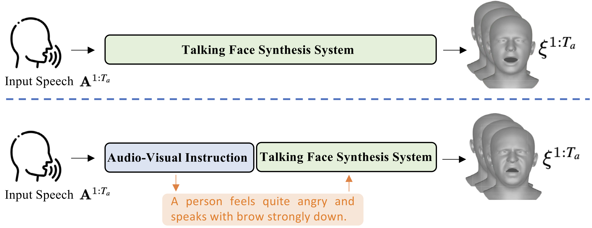
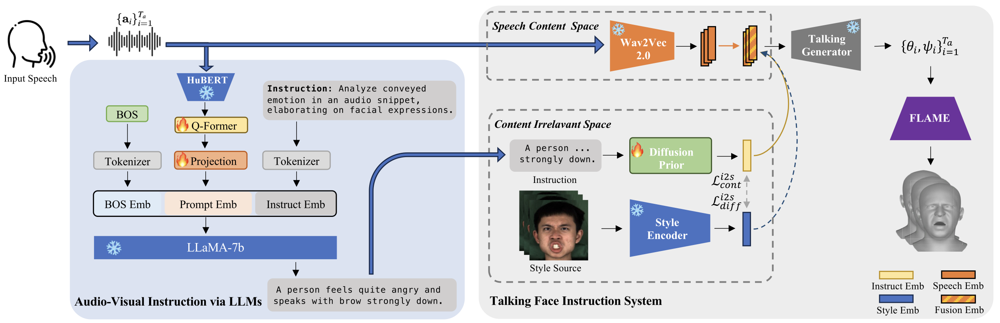

Overview. Previous approaches learn facial motion directly from the speaker's speech. AVI-Talking adds an audio-visual instruction module, built on LLMs, that describes the expressive facial details implied by the speech and instructs the talking face synthesis network.
While considerable progress has been made in achieving accurate lip synchronization for 3D speech-driven talking face generation, the task of incorporating expressive facial detail synthesis aligned with the speaker's speaking status remains challenging. Our goal is to directly leverage the inherent style information conveyed by human speech for generating an expressive talking face that aligns with the speaking status. In this paper, we propose AVI-Talking, an Audio-Visual Instruction system for expressive Talking face generation. This system harnesses the robust contextual reasoning and hallucination capability offered by Large Language Models (LLMs) to instruct the realistic synthesis of 3D talking faces. Instead of directly learning facial movements from human speech, our two-stage strategy involves the LLMs first comprehending audio information and generating instructions implying expressive facial details seamlessly corresponding to the speech. Subsequently, a diffusion-based generative network executes these instructions. This two-stage process, coupled with the incorporation of LLMs, enhances model interpretability and provides users with flexibility to comprehend instructions and specify desired operations or modifications. Extensive experiments showcase the effectiveness of our approach in producing vivid talking faces with expressive facial movements and consistent emotional status.

Pipeline. Left: a Q-Former aligns HuBERT speech features with visual instructions and prompts LLaMA-7B, which proposes a visual instruction that describes plausible facial details. Right: the talking face instruction system receives the instruction and the audio clip separately. The speech content space drives lip movements, and a diffusion prior in the content irrelevant space maps the instruction to an expressive style. The system outputs a time series of 3D FLAME parameters.
@article{sun2024avi,
title = {AVI-Talking: Learning Audio-Visual Instructions for Expressive 3D Talking Face Generation},
author = {Sun, Yasheng and Chu, Wenqing and Zhou, Hang and Wang, Kaisiyuan and Koike, Hideki},
journal = {IEEE Access},
volume = {12},
pages = {57288--57301},
year = {2024},
doi = {10.1109/ACCESS.2024.3390182}
}